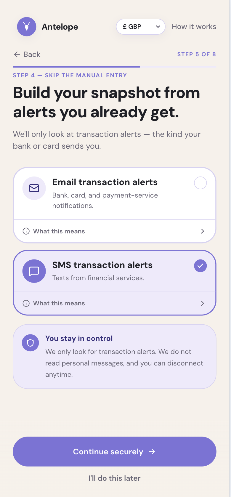
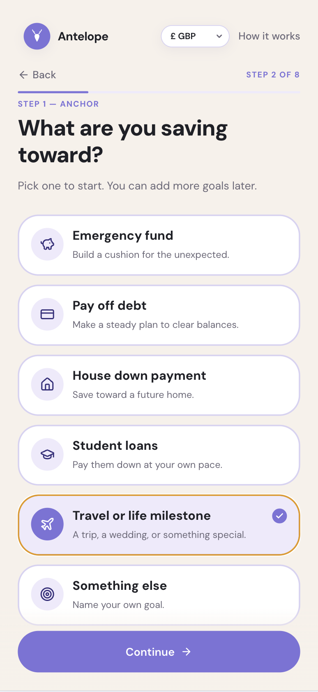
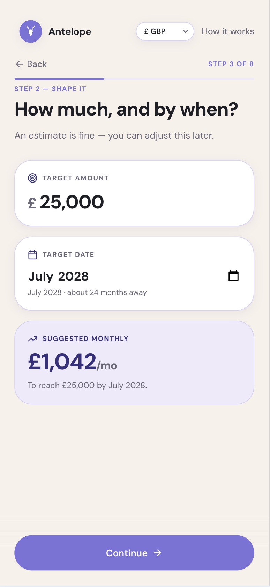
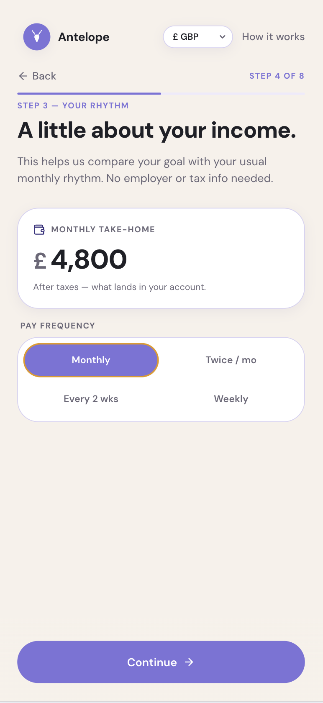
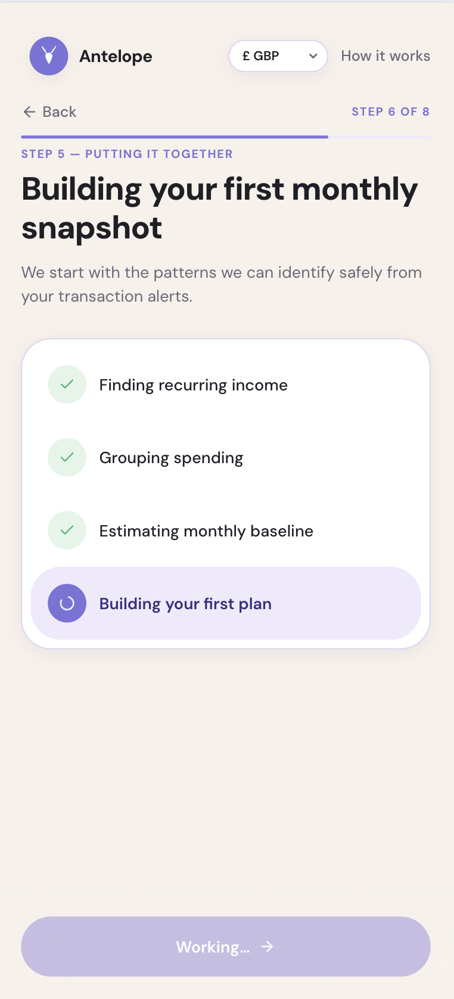
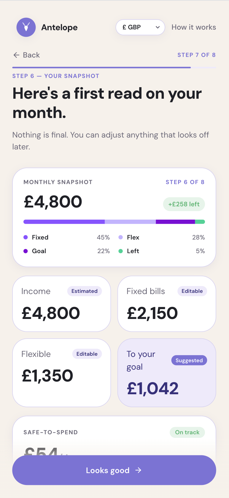
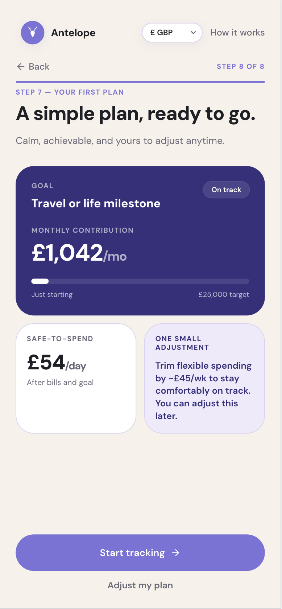
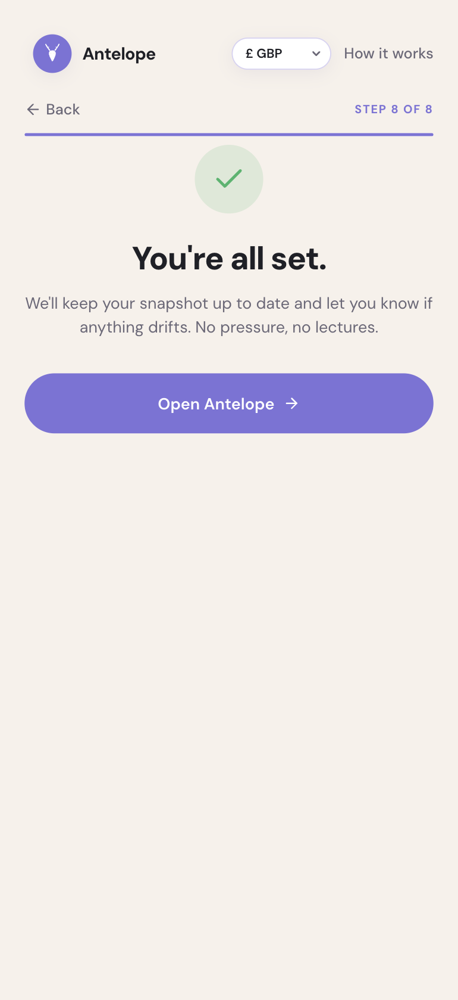

Product design case study
Antelope Wealth
Self-initiated fintech/wealth onboarding concept
Antelope Wealth is a self-initiated fintech and wealth onboarding concept created as a working prototype in Lovable. It explores how a personal finance product could build trust early: starting with a user goal, explaining permissions in plain language and turning finance signals into a calm first money snapshot.
Working prototype
Explore the prototype
Explore the interactive prototype to the right below to experience the goal-led onboarding flow, permission prompt and first-plan journey.
Project summary
- Role
- Product design, UI design, AI-assisted prototyping
- Tools
- Lovable, Figma, GitHub, Codex
- Focus
- Finance onboarding, goal-based money management, permission prompts, dashboard UI
- Status
- Concept prototype
The problem
Many personal finance and wealth products ask users to connect accounts, review transactions or set budgets before they understand the value of the product. This can make onboarding feel heavy, especially for people who want confidence and clarity rather than another complex money-management tool. Antelope Wealth explores a softer onboarding model that starts with the user’s goal, then gradually introduces income basics, transaction signals and a first monthly snapshot.
Design approach

- Start with the user’s financial goal rather than raw bank data.
- Keep the onboarding journey short, clear and emotionally reassuring.
- Break the experience into a guided onboarding flow with clear progress and low cognitive load.
- Explain transaction-alert permissions in plain language.
- Reinforce privacy by making it clear that Antelope Wealth only looks for transaction alerts and never reads personal messages.
- Show value early through a simple first-plan and snapshot experience.
- Keep the visual design clean, warm, accessible and trustworthy for a finance context.
Key features
- Guided onboarding flow
- Goal-first finance setup
- Goal details and income basics
- Transaction-alert connection step
- Auto-built monthly money snapshot
- Review snapshot step
- First-plan experience
- Responsive Lovable prototype
- Embedded live prototype preview
Screenshots
The screenshots below walk through the onboarding journey, from welcome and goal selection through to the first monthly snapshot, initial plan and completion screen.







What I learned
This project helped me practise clearer permission prompts, simpler money-management concepts and finance interface patterns that feel useful, calm and trustworthy without becoming overwhelming.